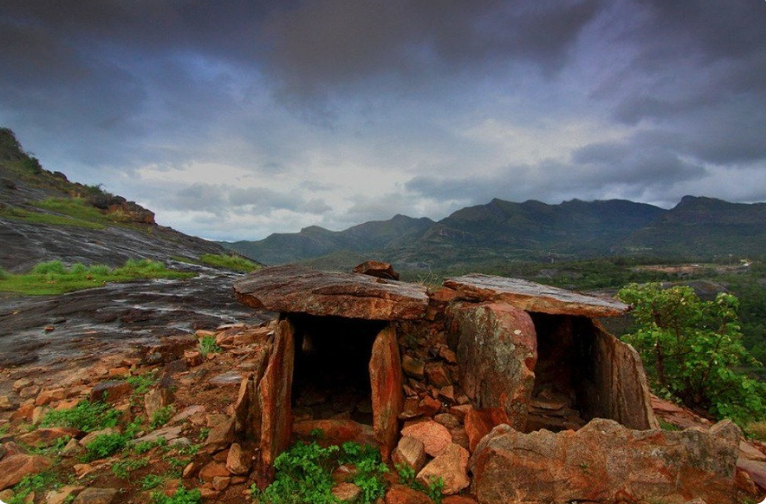
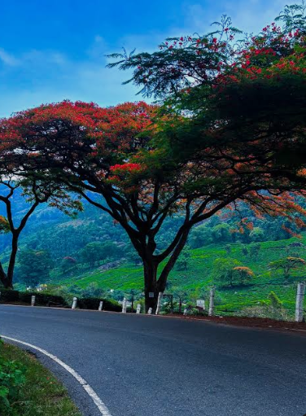
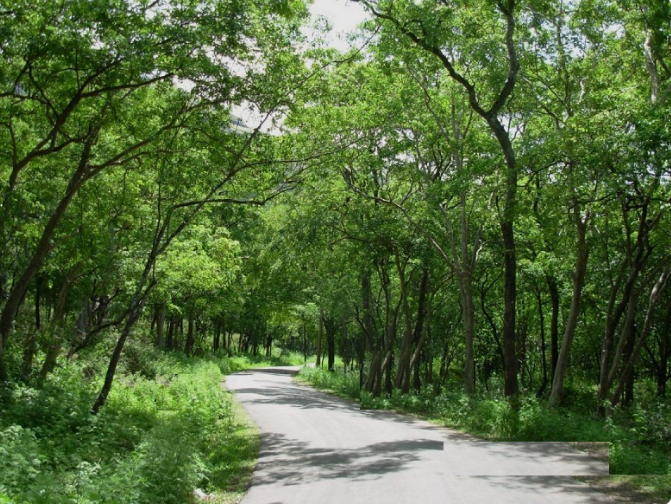
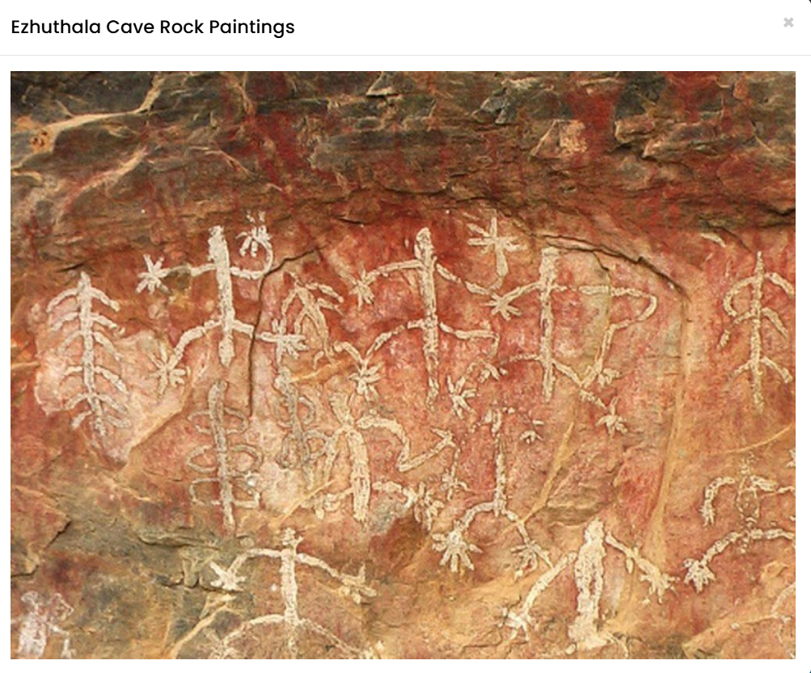
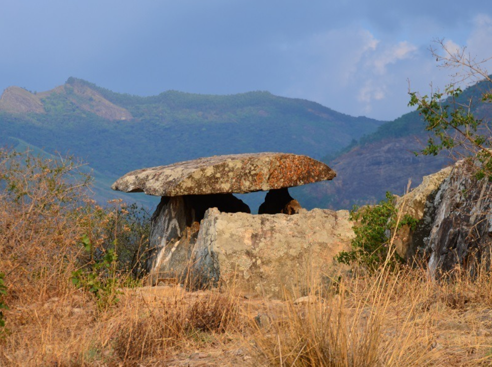

Marayoor is a beautiful village located in the Idukki district of Kerala, near the Kerala–Tamil Nadu border. It is famous for its natural sandalwood forests, which are the only naturally grown sandalwood forests in Kerala. The area is also known for its sugarcane fields, ancient dolmens (stone burial monuments), waterfalls, and scenic valleys. The cool climate and breathtaking landscapes make Marayoor a popular tourist destination.
Visitors can explore the Marayoor Sandalwood Forest, enjoy the fragrance of sandalwood trees, and learn about the conservation of this valuable tree. The village is also home to beautiful viewpoints, rivers, and trekking trails surrounded by the Western Ghats. Marayoor is an ideal destination for nature lovers, history enthusiasts, and travellers who wish to experience Kerala's unique natural and cultural heritage.





Marayoor is a beautiful village in Idukki District, Kerala, located about 40 km from Munnar near the Kerala–Tamil Nadu border. It is famous for its natural sandalwood forests, sugarcane cultivation, ancient dolmens (stone burial monuments), waterfalls and scenic landscapes. Marayoor is the only place in Kerala with natural sandalwood forests.
Marayoor has a rich historical and archaeological heritage. The region is home to prehistoric dolmens believed to be more than 2,000 years old. It has also been famous for sandalwood forests and sugarcane farming for centuries. Today, Marayoor is an important eco-tourism and heritage destination.
Marayoor is famous for its natural sandalwood forests, Muniyara Dolmens, sugarcane farms, Lakkam Waterfalls, Chinnar Wildlife Sanctuary and scenic mountain landscapes. Visitors also enjoy trekking, photography and nature walks.
Marayoor is covered with natural sandalwood forests, sugarcane fields, dry deciduous forests, medicinal plants and native trees. The area supports rich biodiversity and is part of the Western Ghats ecosystem.
Today, Marayoor is one of Kerala's most important eco-tourism and heritage destinations. It is internationally known for its natural sandalwood forests, prehistoric dolmens, sugarcane cultivation and proximity to Chinnar Wildlife Sanctuary. Thousands of visitors come every year to experience its unique natural and cultural heritage.